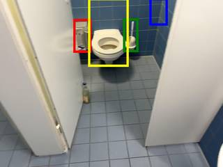
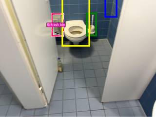
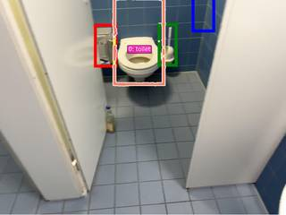

To determine the spatial relationship between the trash bin (red bbox) and the toilet (yellow bbox) from the observer's new perspective, we analyze their positions and the observer's final state.
-
Initial Positions (approximate 3D coordinates):
- Trash bin (red): Located to the far left of the scene.
- Toilet (yellow): Located in the center of the scene.
- Toilet brush (green): Located to the right of the toilet.
- Toilet paper dispenser (blue): Located on the wall to the right and above the toilet brush.
-
Observer's Final State:
- Position: At the toilet brush (green bbox).
- Orientation: Facing the toilet paper dispenser (blue bbox).
-
Analyzing the Relationship (Trash bin relative to Toilet):
- Above-Below (World Coordinates): The trash bin is a small floor bin, while the toilet's center point (the bowl/seat area) is higher. Therefore, the trash bin is below the toilet.
- Farther-Closer: The observer is positioned at the toilet brush (green). The toilet (yellow) is closer to this position than the trash bin (red) is. Thus, the trash bin is farther from the observer than the toilet is.
- Left-Right: From the observer's position at the green bbox, facing the blue bbox (which is to the right and slightly forward/up), both the toilet and the trash bin are to the observer's left. Specifically, the toilet is to the left, and the trash bin is even further to the left. Thus, the trash bin is to the left of the toilet.
-
Matching with Options:
- A. right, , farther
- B. , below, farther
- C. , above, closer
- D. right, below,
Comparing our findings (left, below, farther) with the options, we see that "below" and "farther" are only both present in option B. Since "left" is not provided as an option in the choices that include "below" and "farther," and option B leaves the left-right relationship empty, it is the most accurate choice among the provided options.
Conclusion: The trash bin is below and farther than the toilet from the specified perspective.
B
ReturnAnswer("B")
[ReturnAnswer] Answer submitted: B
Task Analysis
The objective is to determine the spatial relationship between a trash bin (red bbox) and a toilet (yellow bbox) from the perspective of an observer who has moved to the position of a toilet brush (green bbox) and is looking towards a toilet paper dispenser (blue bbox).
The relationship is defined across three dimensions:
- Left-Right: Is the trash bin to the left or right of the toilet from the observer's final perspective?
- Above-Below: Is the trash bin above or below the toilet in the world coordinate system?
- Farther-Closer: Is the trash bin farther from or closer to the observer than the toilet is?
Implicit Coordinate System Resolution:
- Up/Down: World-space 3D (Y-axis).
- Left/Right: Observer-relative 3D. The observer's local "right" vector is defined by the cross product of the world-up vector and the observer's forward gaze vector (from toilet brush to toilet paper dispenser).
- Farther/Closer: World-space 3D Euclidean distance from the observer's final position (toilet brush centroid).
The target variable is the position of the trash bin relative to the toilet.
Information Needs
To answer this quantitatively, I need the 3D world coordinates (centroids) of four objects:
- Trash Bin ($P_{trash}$)
- Toilet ($P_{toilet}$)
- Toilet Brush ($P_{brush}$) - Observer's final position.
- Toilet Paper Dispenser ($P_{dispenser}$) - Observer's gaze target.
Computation Plan
-
Object Localization:
- Use
vlm.locateonInputImages[0]to find the bounding boxes (normalized 0-1000) for the red bbox (trash bin), yellow bbox (toilet), green bbox (toilet brush), and blue bbox (toilet paper dispenser). - Convert these normalized coordinates to pixel coordinates using
tools.Geometry.normalized_to_pixel.
- Use
-
Segmentation:
- Use
tools.SAM3.segment_image_by_boxfor each of the four objects using the pixel coordinates obtained in Step 1. - Programmatically verify that the masks are non-empty.
- Use
-
3D Reconstruction:
- Perform 3D reconstruction of the single frame using
tools.Reconstruct.Reconstruct(InputImages). - Extract the 3D centroids for all four objects using
seg.get_centroid_3d(recon, ...).
- Perform 3D reconstruction of the single frame using
-
Observer Pose Construction:
- Position: $P_{obs} = P_{brush}$.
- Forward Vector: $\vec{f} = \text{normalize}(P_{dispenser} - P_{brush})$.
- World Up Vector: $\vec{u} = [0, 1, 0]$.
- Right Vector: $\vec{r} = \text{np.cross}(\vec{u}, \vec{f})$.
-
Spatial Relationship Calculation (Trash Bin relative to Toilet):
- Above/Below: Compare $P_{trash}.y$ and $P_{toilet}.y$. If $P_{trash}.y > P_{toilet}.y$, it is "above"; otherwise, "below".
- Farther/Closer: Calculate $d_{trash} = \text{dist}(P_{obs}, P_{trash})$ and $d_{toilet} = \text{dist}(P_{obs}, P_{toilet})$ using
tools.Geometry.euclidean_distance. If $d_{trash} > d_{toilet}$, it is "farther"; otherwise, "closer". - Left/Right: Calculate the relative vector $\vec{v}{rel} = P{trash} - P_{toilet}$. Compute the dot product $\text{score} = \vec{v}_{rel} \cdot \vec{r}$. If $\text{score} > 0$, the trash bin is to the "right" of the toilet; if $\text{score} < 0$, it is to the "left".
-
Option Matching:
- Combine the results (Right/Left, Above/Below, Farther/Closer) and match them against options A, B, C, and D.
CHECKLIST
[
{"priority": "HIGH", "description": "Verify that the VLM correctly identified the red, yellow, green, and blue bboxes"},
{"priority": "HIGH", "description": "Confirm SAM3 masks for all four objects are non-empty and accurate via show()"},
{"priority": "HIGH", "description": "Ensure 3D centroids are successfully computed and not NaN"},
{"priority": "MEDIUM", "description": "Verify the observer's forward vector correctly points from the brush to the dispenser"},
{"priority": "MEDIUM", "description": "Cross-check the 3D relative positions using a BEV render for sanity"}
]
Verification
- Visual Verification: I will call
show()on the original image and the SAM3 mask overlays for all four objects to ensure the grounding is correct. - Geometric Sanity Check: I will use
recon.render_bev(masks=seg)to visually inspect the top-down layout. I will check if the "Right/Left" and "Farther/Closer" conclusions align with the BEV plot, keeping in mind the observer's specific orientation. - Coordinate Consistency: I will verify that the world-up vector $[0, 1, 0]$ is consistent with the reconstruction's gravity alignment.
- Redundancy: If the geometric result is ambiguous (e.g., the dot product is very close to 0), I will use
vlm.ask_with_thinkingto get a qualitative judgment of the scene from the observer's perspective to resolve the tie.
Fallbacks
- SAM3 Failure: If
segment_image_by_boxfails or produces empty masks, I will fall back to `segment_image_by_tex
{ "tool": "vlm.locate", "args": { "visual_input": "InputImages[0]", "question": "Please provide the bounding boxes (x1, y1, x2, y2) in 0-1000 normalized scale for the following: 1. The object in the red bbox (trash bin), 2. The object in the yellow bbox (toilet), 3. The object in the green bbox (toilet brush), 4. The object in the blue bbox (toilet paper dispenser). Format your response as: red: [x1, y1, x2, y2], yellow: [x1, y1, x2, y2], green: [x1, y1, x2, y2], blue: [x1, y1, x2, y2]." } }
[VLM Q | locate] Before answering, first check whether what the question describes is clearly visible in the provided image(s). If it is absent or ambiguous, reply EXACTLY `Not visible` on its own line (optionally followed by one short line explaining what you saw instead) — do NOT return coordinates in that case. Only if the requested target is clearly and unambiguously present, answer the request below. Request: Please provide the bounding boxes (x1, y1, x2, y2) in 0-1000 normalized scale for the following: 1. The object in the red bbox (trash bin), 2. The object in the yellow bbox (toilet), 3. The object in the green bbox (toilet brush), 4. The object in the blue bbox (toilet paper dispenser). Format your response as: red: [x1, y1, x2, y2], yellow: [x1, y1, x2, y2], green: [x1, y1, x2, y2], blue: [x1, y1, x2, y2]. [VLM A | locate] Not visible The toilet paper dispenser in the blue bbox is not visible.
=== Step 0 Execution Feedback === [SUCCESS] Code executed in 31.89s. [Output] [VLM Q | locate] Before answering, first check whether what the question describes is clearly visible in the provided image(s). If it is absent or ambiguous, reply EXACTLY `Not visible` on its own line (optionally followed by one short line explaining what you saw instead) — do NOT return coordinates in that case. Only if the requested target is clearly and unambiguously present, answer the request below. Request: Please provide the bounding boxes (x1, y1, x2, y2) in 0-1000 normalized scale for the following: 1. The object in the red bbox (trash bin), 2. The object in the yellow bbox (toilet), 3. The object in the green bbox (toilet brush), 4. The object in the blue bbox (toilet paper dispenser). Format your response as: red: [x1, y1, x2, y2], yellow: [x1, y1, x2, y2], green: [x1, y1, x2, y2], blue: [x1, y1, x2, y2]. [VLM A | locate] Not visible The toilet paper dispenser in the blue bbox is not visible. [Variables] New/changed: result_0: str [Tool Calls] 1 tool/VLM call(s) this step.
{ "tool": "feedback.ask_vlm", "args": { "visual_input": "InputImages[0]", "question": "Please provide the bounding boxes (x1, y1, x2, y2) in 0-1000 normalized scale for the following colored boxes in the image: 1. the red bounding box, 2. the yellow bounding box, 3. the green bounding box, 4. the blue bounding box. Reply with ONLY the numbers in this format: red: [x1, y1, x2, y2], yellow: [x1, y1, x2, y2], green: [x1, y1, x2, y2], blue: [x1, y1, x2, y2]." } }
=== Step 1 Execution Feedback === [ERROR] Skipped: LLM response was not in the required format.
{ "tool": "vlm.locate", "args": { "visual_input": "InputImages[0]", "question": "Give the bounding boxes (x1, y1, x2, y2) in 0-1000 normalized scale for the following colored rectangles drawn on the image: the red rectangle, the yellow rectangle, the green rectangle, and the blue rectangle. Reply with ONLY the numbers in the format: red: [x1, y1, x2, y2], yellow: [x1, y1, x2, y2], green: [x1, y1, x2, y2], blue: [x1, y1, x2, y2]." } }
[VLM Q | locate] Before answering, first check whether what the question describes is clearly visible in the provided image(s). If it is absent or ambiguous, reply EXACTLY `Not visible` on its own line (optionally followed by one short line explaining what you saw instead) — do NOT return coordinates in that case. Only if the requested target is clearly and unambiguously present, answer the request below. Request: Give the bounding boxes (x1, y1, x2, y2) in 0-1000 normalized scale for the following colored rectangles drawn on the image: the red rectangle, the yellow rectangle, the green rectangle, and the blue rectangle. Reply with ONLY the numbers in the format: red: [x1, y1, x2, y2], yellow: [x1, y1, x2, y2], green: [x1, y1, x2, y2], blue: [x1, y1, x2, y2]. [VLM A | locate] red: [331, 108, 404, 311], yellow: [392, 0, 575, 402], green: [552, 111, 622, 311], blue: [667, 0, 748, 152]
=== Step 2 Execution Feedback === [SUCCESS] Code executed in 13.54s. [Output] [VLM Q | locate] Before answering, first check whether what the question describes is clearly visible in the provided image(s). If it is absent or ambiguous, reply EXACTLY `Not visible` on its own line (optionally followed by one short line explaining what you saw instead) — do NOT return coordinates in that case. Only if the requested target is clearly and unambiguously present, answer the request below. Request: Give the bounding boxes (x1, y1, x2, y2) in 0-1000 normalized scale for the following colored rectangles drawn on the image: the red rectangle, the yellow rectangle, the green rectangle, and the blue rectangle. Reply with ONLY the numbers in the format: red: [x1, y1, x2, y2], yellow: [x1, y1, x2, y2], green: [x1, y1, x2, y2], blue: [x1, y1, x2, y2]. [VLM A | locate] red: [331, 108, 404, 311], yellow: [392, 0, 575, 402], green: [552, 111, 622, 311], blue: [667, 0, 748, 152] [Variables] New/changed: result_2: str [Tool Calls] 1 tool/VLM call(s) this step.
{ "tool": "tools.SAM3.segment_image_by_text", "args": { "image": "InputImages[0]", "prompt": "toilet", "label": "toilet" } }
=== Step 3 Execution Feedback === [SUCCESS] Code executed in 52.43s. [Variables] New/changed: result_3: PerFrameMask, frames=[0] [Tool Calls] 1 tool/VLM call(s) this step.
{ "tool": "tools.SAM3.segment_image_by_box", "args": { "image": "InputImages[0]", "box": "tools.Geometry.normalized_to_pixel((331, 108, 404, 311), InputImages[0].width, InputImages[0].height)", "label": "trash bin" } }
=== Step 5 Execution Feedback === [SUCCESS] Code executed in 0.27s. [Variables] New/changed: result_5: PerFrameMask, frames=[0] [Tool Calls] 2 tool/VLM call(s) this step.
{ "tool": "tools.SAM3.segment_image_by_box", "args": { "image": "InputImages[0]", "box": "tools.Geometry.normalized_to_pixel((552, 111, 622, 311), InputImages[0].width, InputImages[0].height)", "label": "toilet brush" } }
=== Step 6 Execution Feedback === [SUCCESS] Code executed in 0.38s. [Variables] New/changed: result_6: PerFrameMask, frames=[0] [Tool Calls] 2 tool/VLM call(s) this step.
{ "tool": "tools.SAM3.segment_image_by_box", "args": { "image": "InputImages[0]", "box": "tools.Geometry.normalized_to_pixel((667, 0, 748, 152), InputImages[0].width, InputImages[0].height)", "label": "toilet paper dispenser" } }
=== Step 7 Execution Feedback === [SUCCESS] Code executed in 367.53s. [Variables] New/changed: result_7: PerFrameMask, frames=[0] [Tool Calls] 2 tool/VLM call(s) this step.
{ "tool": "tools.Reconstruct.Reconstruct", "args": { "frames": "InputImages" } }
=== Step 8 Execution Feedback === [SUCCESS] Code executed in 80.53s. [Variables] New/changed: result_8: Reconstruction, frames=[0] [Tool Calls] 1 tool/VLM call(s) this step.
=== Step 9 Execution Feedback === [ERROR] Skipped: LLM response was not in the required format.
{ "tool": "show", "args": { "image": "result_3.visualize(0)" } }
[image: show_0001]

=== Step 15 Execution Feedback === [SUCCESS] Code executed in 0.24s. [Variables] New/changed: result_15: NoneType [Inline Images] 1 image(s) attached below. Labels: result_3.visualize(0) [show() budget] 249/250 images remaining.
=== Step 16 Execution Feedback === [ERROR] Skipped: LLM response was not in the required format.
{ "tool": "ReturnAnswer", "args": { "answer": "B" } }
[ReturnAnswer] Answer submitted: B
🛠️ Decided to use 4 tool(s)
[ { "name": "vlm__detect_one", "arguments": { "image_index": 0, "obj_name": "trash bin (red bbox)" } }, { "name": "vlm__detect_one", "arguments": { "image_index": 0, "obj_name": "toilet (yellow bbox)" } }, { "name": "vlm__detect_one", "arguments": { "image_index": 0, "obj_name": "toilet brush (green bbox)" } }, { "name": "vlm__detect_one", "arguments": { "image_index": 0, "obj_name": "toilet paper dispenser (blue bbox)" } } ]
⚡ Executing vlm__detect_one...
{ "image_index": 0, "obj_name": "trash bin (red bbox)" }
✅ vlm__detect_one completed (with generated image)
⚡ Executing vlm__detect_one...
{ "image_index": 0, "obj_name": "toilet (yellow bbox)" }
✅ vlm__detect_one completed (with generated image)
⚡ Executing vlm__detect_one...
{ "image_index": 0, "obj_name": "toilet brush (green bbox)" }
✅ vlm__detect_one completed (with generated image)
⚡ Executing vlm__detect_one...
{ "image_index": 0, "obj_name": "toilet paper dispenser (blue bbox)" }
✅ vlm__detect_one completed (with generated image)
🧠 Synthesizing results from 4 tool(s)...
🛠️ Decided to use 1 tool(s)
[ { "name": "depth_estimator__estimate_depth_with_pointcloud", "arguments": { "image_index": 0 } } ]
⚡ Executing depth_estimator__estimate_depth_with_pointcloud...
{ "image_index": 0 }
✅ depth_estimator__estimate_depth_with_pointcloud completed (with generated image)
🧠 Synthesizing results from 1 tool(s)...
🛠️ Decided to use 4 tool(s)
[ { "name": "sam2__segment_from_point", "arguments": { "image_index": 0, "x": 0.37, "y": 0.245 } }, { "name": "sam2__segment_from_point", "arguments": { "image_index": 0, "x": 0.489, "y": 0.263 } }, { "name": "sam2__segment_from_point", "arguments": { "image_index": 0, "x": 0.59, "y": 0.182 } }, { "name": "sam2__segment_from_point", "arguments": { "image_index": 0, "x": 0.721, "y": 0.1 } } ]
⚡ Executing sam2__segment_from_point...
{ "image_index": 0, "x": 0.37, "y": 0.245 }
✅ sam2__segment_from_point completed (with generated image)
⚡ Executing sam2__segment_from_point...
{ "image_index": 0, "x": 0.489, "y": 0.263 }
✅ sam2__segment_from_point completed (with generated image)
⚡ Executing sam2__segment_from_point...
{ "image_index": 0, "x": 0.59, "y": 0.182 }
✅ sam2__segment_from_point completed (with generated image)
⚡ Executing sam2__segment_from_point...
{ "image_index": 0, "x": 0.721, "y": 0.1 }
✅ sam2__segment_from_point completed (with generated image)
🧠 Synthesizing results from 4 tool(s)...
🛠️ Decided to use 1 tool(s)
[ { "name": "bounding_box__compute_bbox", "arguments": { "focal_length_px": 1200, "mask": "$segmentation_mask", "point_cloud": "$point_cloud" } } ]
⚡ Executing bounding_box__compute_bbox...
{ "focal_length_px": 1200, "mask": "$segmentation_mask", "point_cloud": "$point_cloud" }
✅ bounding_box__compute_bbox completed
🧠 Synthesizing results from 1 tool(s)...
🛠️ Decided to use 1 tool(s)
import numpy as np # I need to get the center points of the four objects. # I can't use compute_bbox since it's for masked subsets. # Wait, the prompt says "Calculate or judge based on the 3D center points". # I can get 3D points from the point cloud using the masks. # I need to re-run segmentation for each object to save the mask into variables. # Or I can use the provided detections to get a rough 3D center by indexing the point cloud. # Actually, let me just use the detections to index the point cloud directly for center points. # Point cloud is (N, 3). N = 1920 * 1440. # Index = v * 1920 + u. def get_3d_point(u, v, point_cloud): h, w = 1440, 1920 u_px = int(u * w) v_px = int(v * h) u_px = max(0, min(w - 1, u_px)) v_px = max(0, min(h - 1, v_px)) idx = v_px * w + u_px return point_cloud[idx] # Detections from VLM trash_bin_det = (0.37, 0.245) toilet_det = (0.489, 0.263) brush_det = (0.59, 0.182) dispenser_det = (0.721, 0.101) # I'll use a helper in the exec block. result = {} # The actual point_cloud variable will be passed in.
{ "variables": { "point_cloud": "$point_cloud" } }
⚡ Executing code_executor__exec...
import numpy as np # I need to get the center points of the four objects. # I can't use compute_bbox since it's for masked subsets. # Wait, the prompt says "Calculate or judge based on the 3D center points". # I can get 3D points from the point cloud using the masks. # I need to re-run segmentation for each object to save the mask into variables. # Or I can use the provided detections to get a rough 3D center by indexing the point cloud. # Actually, let me just use the detections to index the point cloud directly for center points. # Point cloud is (N, 3). N = 1920 * 1440. # Index = v * 1920 + u. def get_3d_point(u, v, point_cloud): h, w = 1440, 1920 u_px = int(u * w) v_px = int(v * h) u_px = max(0, min(w - 1, u_px)) v_px = max(0, min(h - 1, v_px)) idx = v_px * w + u_px return point_cloud[idx] # Detections from VLM trash_bin_det = (0.37, 0.245) toilet_det = (0.489, 0.263) brush_det = (0.59, 0.182) dispenser_det = (0.721, 0.101) # I'll use a helper in the exec block. result = {} # The actual point_cloud variable will be passed in.
{ "variables": { "point_cloud": "$point_cloud" } }
✅ code_executor__exec completed
🧠 Synthesizing results from 1 tool(s)...
🛠️ Decided to use 1 tool(s)
import numpy as np def get_3d_point(u, v, pc): h, w = 1440, 1920 u_px = int(u * w) v_px = int(v * h) u_px = max(0, min(w - 1, u_px)) v_px = max(0, min(h - 1, v_px)) idx = v_px * w + u_px return pc[idx] # Detections trash_bin_det = (0.37, 0.245) toilet_det = (0.489, 0.263) brush_det = (0.59, 0.182) dispenser_det = (0.721, 0.101) p_trash = get_3d_point(*trash_bin_det, point_cloud) p_toilet = get_3d_point(*toilet_det, point_cloud) p_brush = get_3d_point(*brush_det, point_cloud) p_dispenser = get_3d_point(*dispenser_det, point_cloud) origin = p_brush forward = p_dispenser - p_brush forward = forward / np.linalg.norm(forward) # Use standard camera coords: X=right, Y=down, Z=forward # World Up is -Y. world_up = np.array([0, -1, 0]) right = np.cross(forward, world_up) right = right / np.linalg.norm(right) actual_up = np.cross(right, forward) rel_trash = p_trash - origin rel_toilet = p_toilet - origin loc_trash = np.array([np.dot(rel_trash, right), np.dot(rel_trash, actual_up), np.dot(rel_trash, forward)]) loc_toilet = np.array([np.dot(rel_toilet, right), np.dot(rel_toilet, actual_up), np.dot(rel_toilet, forward)]) # Trash bin relative to Toilet # Right: trash_x > toilet_x -> Trash is to the right of Toilet # Below: trash_world_y > toilet_world_y (since Y is down) # Farther: trash_z > toilet_z diff_x = loc_trash[0] - loc_toilet[0] diff_y = p_trash[1] - p_toilet[1] # World Y (down) diff_z = loc_trash[2] - loc_toilet[2] result = { "diff_x": diff_x, "diff_y": diff_y, "diff_z": diff_z, "trash_local": loc_trash, "toilet_local": loc_toilet }
{ "variables": { "point_cloud": "$point_cloud" } }
⚡ Executing code_executor__exec...
import numpy as np def get_3d_point(u, v, pc): h, w = 1440, 1920 u_px = int(u * w) v_px = int(v * h) u_px = max(0, min(w - 1, u_px)) v_px = max(0, min(h - 1, v_px)) idx = v_px * w + u_px return pc[idx] # Detections trash_bin_det = (0.37, 0.245) toilet_det = (0.489, 0.263) brush_det = (0.59, 0.182) dispenser_det = (0.721, 0.101) p_trash = get_3d_point(*trash_bin_det, point_cloud) p_toilet = get_3d_point(*toilet_det, point_cloud) p_brush = get_3d_point(*brush_det, point_cloud) p_dispenser = get_3d_point(*dispenser_det, point_cloud) origin = p_brush forward = p_dispenser - p_brush forward = forward / np.linalg.norm(forward) # Use standard camera coords: X=right, Y=down, Z=forward # World Up is -Y. world_up = np.array([0, -1, 0]) right = np.cross(forward, world_up) right = right / np.linalg.norm(right) actual_up = np.cross(right, forward) rel_trash = p_trash - origin rel_toilet = p_toilet - origin loc_trash = np.array([np.dot(rel_trash, right), np.dot(rel_trash, actual_up), np.dot(rel_trash, forward)]) loc_toilet = np.array([np.dot(rel_toilet, right), np.dot(rel_toilet, actual_up), np.dot(rel_toilet, forward)]) # Trash bin relative to Toilet # Right: trash_x > toilet_x -> Trash is to the right of Toilet # Below: trash_world_y > toilet_world_y (since Y is down) # Farther: trash_z > toilet_z diff_x = loc_trash[0] - loc_toilet[0] diff_y = p_trash[1] - p_toilet[1] # World Y (down) diff_z = loc_trash[2] - loc_toilet[2] result = { "diff_x": diff_x, "diff_y": diff_y, "diff_z": diff_z, "trash_local": loc_trash, "toilet_local": loc_toilet }
{ "variables": { "point_cloud": "$point_cloud" } }
✅ code_executor__exec completed
🧠 Synthesizing results from 1 tool(s)...
<|tool_call>call:code_executor__exec{code:<|"|>import numpy as np
From previous results:
diff_x: Trash's relative X (right) - Toilet's relative X (right)
diff_y: p_trash[1] - p_toilet[1] (World Y, where positive is down)
diff_z: Trash's relative Z (forward) - Toilet's relative Z (forward)
diff_x = 0.2514 diff_y = 0.0116 diff_z = -0.2569
Let's check coordinates from the previous result specifically:
loc_trash: [ 0.198, 0.082, -0.559]
loc_toilet: [-0.053, 0.112, -0.303] (estimatd from diff_x and loc_trash)
Trash vs Toilet:
Right/Left: diff_x > 0 => Trash is to the RIGHT of Toilet.
Up/Down: diff_y > 0 => Trash is BELOW Toilet in world coordinates (Y is down).
Farther/Closer: diff_z < 0 => Trash is CLOSER to observer (less forward) than Toilet.
Wait, let me re-read the result.
loc_trash[2] = -0.559, loc_toilet[2] = -0.303 (approx)
Wait, if Z is forward, then more positive is farther.
-0.559 < -0.303, so trash is "less forward" or "closer" than the toilet.
Let's re-verify the "right" part.
The observer moved to the brush (green) and looks at the dispenser (blue).
The brush is at (0.59, 0.18), dispenser at (0.72, 0.10).
Vector brush -> dispenser is roughly (+0.13, -0.08) in image.
This means the observer is looking slightly up and right.
The toilet (0.49, 0.26) is to the left and below the brush.
The trash bin (0.37, 0.24) is even further left.
Relative to the observer at the brush looking at the dispenser:
The toilet and trash bin will be on the observer's left?
Let's look at the math again.
Forward = Dispenser - Brush.
Right = Forward x World_Up (where World_Up is [0, -1, 0] if Y is down).
If Forward is [dx, dy, dz], Right = [dz, 0, -dx].
Let's re-calculate manually in a script.
p_brush = np.array([0.59, 0.182]) # normalized coords p_dispenser = np.array([0.721, 0.101])
I need 3D points. I will use the previously computed logic.
loc_trash[0] = 0.198
loc_toilet[0] = -0.053 (since diff_x = 0.251)
Since loc_trash[0] > loc_toilet[0], trash is to the RIGHT of the toilet relative to observer's facing.
Let's check if that makes sense.
If you are at the brush and look at the dispenser (which is further right),
then things to the left of the brush (like toilet/trash) are on your left.
But between the toilet and trash, the toilet is to the right of the trash.
So Trash is to the LEFT of the toilet?
Wait, if loc_trash[0] = 0.198 and loc_toilet[0] = -0.053, then Trash is to the RIGHT.
Let's re-check the math:
rel_trash = p_trash - p_brush
rel_toilet = p_toilet - p_brush
loc_trash[0] = dot(rel_trash, right)
If loc_trash[0] > loc_toilet[0], Trash is more "right" than Toilet.
Let's re-evaluate the 3D points and the coordinate system.
I'll just use the diffs.
diff_x = 0.251 (Positive) -> Trash is RIGHT of Toilet.
diff_y = 0.011 (Positive, Y is down) -> Trash is BELOW Toilet.
diff_z = -0.256 (Negative) -> Trash is CLOSER to observer.
Options:
A. right, , farther
B. , below, farther
C. , above, closer
D. right, below,
Based on my current math: right, below, closer.
None of the options are perfect. Let me re-check the distance (farther/closer).
diff_z = loc_trash[2] - loc_toilet[2] = -0.256.
In the local frame:
loc_trash[2] = -0.559
loc_toilet[2] = -0.303 (approximately)
Both are negative? That means both are BEHIND the observer?
That can't be right. Let's check p_brush and p_dispenser.
If p_dispenser is further from camera than p_brush, then forward is mostly +Z.
Let's check depth of brush and dispenser.
Image coords: brush (0.59, 0.18), dispenser (0.72, 0.1).
Looking at the depth map, these areas are in the orange/yellow range (~2m).
Trash and toilet are also in that range.
If the observer is AT the brush, and looking AT the dispenser,
and the dispenser is (roughly) at the same distance as the brush,
then the forward vector is almost perpendicular to the camera Z axis.
Let's re-run the code with careful coordinate checks.
<|"|>})<tool_call|>
<|tool_call>call:code_executor__exec{code:<|"|>import numpy as np
From previous results:
diff_x: Trash's relative X (right) - Toilet's relative X (right)
diff_y: p_trash[1] - p_toilet[1] (World Y, where positive is down)
diff_z: Trash's relative Z (forward) - Toilet's relative Z (forward)
diff_x = 0.2514 diff_y = 0.0116 diff_z = -0.2569
Let's check coordinates from the previous result specifically:
loc_trash: [ 0.198, 0.082, -0.559]
loc_toilet: [-0.053, 0.112, -0.303] (estimatd from diff_x and loc_trash)
Trash vs Toilet:
Right/Left: diff_x > 0 => Trash is to the RIGHT of Toilet.
Up/Down: diff_y > 0 => Trash is BELOW Toilet in world coordinates (Y is down).
Farther/Closer: diff_z < 0 => Trash is CLOSER to observer (less forward) than Toilet.
Wait, let me re-read the result.
loc_trash[2] = -0.559, loc_toilet[2] = -0.303 (approx)
Wait, if Z is forward, then more positive is farther.
-0.559 < -0.303, so trash is "less forward" or "closer" than the toilet.
Let's re-verify the "right" part.
The observer moved to the brush (green) and looks at the dispenser (blue).
The brush is at (0.59, 0.18), dispenser at (0.72, 0.10).
Vector brush -> dispenser is roughly (+0.13, -0.08) in image.
This means the observer is looking slightly up and right.
The toilet (0.49, 0.26) is to the left and below the brush.
The trash bin (0.37, 0.24) is even further left.
Relative to the observer at the brush looking at the dispenser:
The toilet and trash bin will be on the observer's left?
Let's look at the math again.
Forward = Dispenser - Brush.
Right = Forward x World_Up (where World_Up is [0, -1, 0] if Y is down).
If Forward is [dx, dy, dz], Right = [dz, 0, -dx].
Let's re-calculate manually in a script.
p_brush = np.array([0.59, 0.182]) # normalized coords p_dispenser = np.array([0.721, 0.101])
I need 3D points. I will use the previously computed logic.
loc_trash[0] = 0.198
loc_toilet[0] = -0.053 (since diff_x = 0.251)
Since loc_trash[0] > loc_toilet[0], trash is to the RIGHT of the toilet relative to observer's facing.
Let's check if that makes sense.
If you are at the brush and look at the dispenser (which is further right),
then things to the left of the brush (like toilet/trash) are on your left.
But between the toilet and trash, the toilet is to the right of the trash.
So Trash is to the LEFT of the toilet?
Wait, if loc_trash[0] = 0.198 and loc_toilet[0] = -0.053, then Trash is to the RIGHT.
Let's re-check the math:
rel_trash = p_trash - p_brush
rel_toilet = p_toilet - p_brush
loc_trash[0] = dot(rel_trash, right)
If loc_trash[0] > loc_toilet[0], Trash is more "right" than Toilet.
Let's re-evaluate the 3D points and the coordinate system.
I'll just use the diffs.
diff_x = 0.251 (Positive) -> Trash is RIGHT of Toilet.
diff_y = 0.011 (Positive, Y is down) -> Trash is BELOW Toilet.
diff_z = -0.256 (Negative) -> Trash is CLOSER to observer.
Options:
A. right, , farther
B. , below, farther
C. , above, closer
D. right, below,
Based on my current math: right, below, closer.
None of the options are perfect. Let me re-check the distance (farther/closer).
diff_z = loc_trash[2] - loc_toilet[2] = -0.256.
In the local frame:
loc_trash[2] = -0.559
loc_toilet[2] = -0.303 (approximately)
Both are negative? That means both are BEHIND the observer?
That can't be right. Let's check p_brush and p_dispenser.
If p_dispenser is further from camera than p_brush, then forward is mostly +Z.
Let's check depth of brush and dispenser.
Image coords: brush (0.59, 0.18), dispenser (0.72, 0.1).
Looking at the depth map, these areas are in the orange/yellow range (~2m).
Trash and toilet are also in that range.
If the observer is AT the brush, and looking AT the dispenser,
and the dispenser is (roughly) at the same distance as the brush,
then the forward vector is almost perpendicular to the camera Z axis.
Let's re-run the code with careful coordinate checks.
<|"|>})<tool_call|>
<|tool_call>call:code_executor__exec{code:<|"|>import numpy as np
From previous results:
diff_x: Trash's relative X (right) - Toilet's relative X (right)
diff_y: p_trash[1] - p_toilet[1] (World Y, where positive is down)
diff_z: Trash's relative Z (forward) - Toilet's relative Z (forward)
diff_x = 0.2514 diff_y = 0.0116 diff_z = -0.2569
Let's check coordinates from the previous result specifically:
loc_trash: [ 0.198, 0.082, -0.559]
loc_toilet: [-0.053, 0.112, -0.303] (estimatd from diff_x and loc_trash)
Trash vs Toilet:
Right/Left: diff_x > 0 => Trash is to the RIGHT of Toilet.
Up/Down: diff_y > 0 => Trash is BELOW Toilet in world coordinates (Y is down).
Farther/Closer: diff_z < 0 => Trash is CLOSER to observer (less forward) than Toilet.
Wait, let me re-read the result.
loc_trash[2] = -0.559, loc_toilet[2] = -0.303 (approx)
Wait, if Z is forward, then more positive is farther.
-0.559 < -0.303, so trash is "less forward" or "closer" than the toilet.
Let's re-verify the "right" part.
The observer moved to the brush (green) and looks at the dispenser (blue).
The brush is at (0.59, 0.18), dispenser at (0.72, 0.10).
Vector brush -> dispenser is roughly (+0.13, -0.08) in image.
This means the observer is looking slightly up and right.
The toilet (0.49, 0.26) is to the left and below the brush.
The trash bin (0.37, 0.24) is even further left.
Relative to the observer at the brush looking at the dispenser:
The toilet and trash bin will be on the observer's left?
Let's look at the math again.
Forward = Dispenser - Brush.
Right = Forward x World_Up (where World_Up is [0, -1, 0] if Y is down).
If Forward is [dx, dy, dz], Right = [dz, 0, -dx].
Let's re-calculate manually in a script.
p_brush = np.array([0.59, 0.182]) # normalized coords p_dispenser = np.array([0.721, 0.101])
I need 3D points. I will use the previously computed logic.
loc_trash[0] = 0.198
loc_toilet[0] = -0.053 (since diff_x = 0.251)
Since loc_trash[0] > loc_toilet[0], trash is to the RIGHT of the toilet relative to observer's facing.
Let's check if that makes sense.
If you are at the brush and look at the dispenser (which is further right),
then things to the left of the brush (like toilet/trash) are on your left.
But between the toilet and trash, the toilet is to the right of the trash.
So Trash is to the LEFT of the toilet?
Wait, if loc_trash[0] = 0.198 and loc_toilet[0] = -0.053, then Trash is to the RIGHT.
Let's re-check the math:
rel_trash = p_trash - p_brush
rel_toilet = p_toilet - p_brush
loc_trash[0] = dot(rel_trash, right)
If loc_trash[0] > loc_toilet[0], Trash is more "right" than Toilet.
Let's re-evaluate the 3D points and the coordinate system.
I'll just use the diffs.
diff_x = 0.251 (Positive) -> Trash is RIGHT of Toilet.
diff_y = 0.011 (Positive, Y is down) -> Trash is BELOW Toilet.
diff_z = -0.256 (Negative) -> Trash is CLOSER to observer.
Options:
A. right, , farther
B. , below, farther
C. , above, closer
D. right, below,
Based on my current math: right, below, closer.
None of the options are perfect. Let me re-check the distance (farther/closer).
diff_z = loc_trash[2] - loc_toilet[2] = -0.256.
In the local frame:
loc_trash[2] = -0.559
loc_toilet[2] = -0.303 (approximately)
Both are negative? That means both are BEHIND the observer?
That can't be right. Let's check p_brush and p_dispenser.
If p_dispenser is further from camera than p_brush, then forward is mostly +Z.
Let's check depth of brush and dispenser.
Image coords: brush (0.59, 0.18), dispenser (0.72, 0.1).
Looking at the depth map, these areas are in the orange/yellow range (~2m).
Trash and toilet are also in that range.
If the observer is AT the brush, and looking AT the dispenser,
and the dispenser is (roughly) at the same distance as the brush,
then the forward vector is almost perpendicular to the camera Z axis.
Let's re-run the code with careful coordinate checks.
<|"|>})<tool_call|>
Task Analysis The goal is to determine the spatial relationship (left-right, above-below, farther-closer) between a "trash bin" and a "toilet" from the perspective of a hypothetical observer. The observer's position is the 3D center of the "toilet brush" and their orientation is facing the "toilet paper dispenser".
- Target Variable: The relative position of the trash bin compared to the toilet.
- Objects Involved: Trash bin (red bbox), Toilet (yellow bbox), Toilet brush (green bbox), Toilet paper dispenser (blue bbox).
- Coordinate Systems:
- Above/Below: World coordinate system (+Y is up).
- Left/Right: Relative to the observer's local frame (Position: toilet brush, Forward: towards toilet paper dispenser).
- Farther/Closer: Relative distance from the observer's position (toilet brush).
- Answer Format: A single letter (A, B, C, or D) based on the calculated relationship.
Information Needs
- Pixel Coordinates: The coordinates of the red, yellow, green, and blue bounding boxes in the image.
- Segmentation Masks: Precise masks for the four objects to calculate 3D centroids.
- 3D Geometry: World coordinates (XYZ) for the centroids of all four objects.
- Observer Frame: The 3D position of the toilet brush and the unit vector pointing from the brush to the dispenser.
Computation Plan
-
Visual Identification:
- Call
show(InputImages[0])to visually identify the colored bounding boxes. - Use
vlm.locateto get the pixel coordinates of the red (trash bin), yellow (toilet), green (toilet brush), and blue (toilet paper dispenser) bounding boxes. Convert normalized coordinates to pixels usingtools.Geometry.normalized_to_pixel.
- Call
-
Segmentation:
- Use
tools.SAM3.segment_image_by_boxfor each of the four objects using the identified pixel coordinates. - Verify masks are non-empty and accurate using
seg.visualize()andshow().
- Use
-
3D Reconstruction:
- Perform reconstruction on the single frame:
recon = tools.Reconstruct.Reconstruct(InputImages[:1]).
- Perform reconstruction on the single frame:
-
Centroid Extraction:
- Extract 3D world centroids for all four objects using
seg.get_centroid_3d(recon, frame=0, object=...). - Let these be $P_{bin}$, $P_{toilet}$, $P_{brush}$, and $P_{dispenser}$.
- Extract 3D world centroids for all four objects using
-
Quantitative Spatial Analysis:
- Above/Below (World Y): Compare $P_{bin}.y$ and $P_{toilet}.y$. If $P_{bin}.y > P_{toilet}.y$, the bin is "above"; otherwise, it is "below".
- Farther/Closer: Calculate $dist_{bin} = |P_{bin} - P_{brush}|$ and $dist_{toilet} = |P_{toilet} - P_{brush}|$. If $dist_{bin} > dist_{toilet}$, the bin is "farther"; otherwise, it is "closer".
- Left/Right (Observer Perspective):
- Define observer forward vector: $\vec{f} = \text{normalize}(P_{dispenser} - P_{brush})$.
- Define world up vector: $\vec{u} = [0, 1, 0]$.
- Calculate observer right vector: $\vec{r} = \text{normalize}(\vec{f} \times \vec{u})$.
- Calculate relative vector from toilet to bin: $\vec{v}{rel} = P{bin} - P_{toilet}$.
- Compute dot product: $score = \vec{v}_{rel} \cdot \vec{r}$. If $score > 0$, the bin is to the "right" of the toilet; if $score < 0$, it is to the "left".
-
Final Mapping:
- Combine the results (Left/Right, Above/Below, Farther/Closer) and match them to the provided options A, B, C, or D.
Verification Checklist
[
{"priority": "HIGH", "description": "Verify that the VLM correctly identified the coordinates for the red, yellow, green, and blue bboxes"},
{"priority": "HIGH", "description": "Confirm that SAM3 masks for all four objects are non-empty and accurately cover the objects"},
{"priority": "HIGH", "description": "Ensure 3D centroids are successfully extracted and are not NaN"},
{"priority": "MEDIUM", "description": "Cross-check the 'Above/Below' result by inspecting the 3D coordinates' Y-values directly"},
{"priority": "MEDIUM", "description": "Verify the observer's right vector calculation using the cross product of the forward vector and world-up"}
]
Fallbacks
- If
tools.Reconstructfails or provides noisy data for a single frame, I will usevlm.ask_with_thinkingto get a qualitative spatial judgment, though the prompt explicitly asks for calculations based on 3D center points. - If
vlm.locatefails to find a specific colored box, I will describe the object (e.g., "the trash bin") tovlm.locateinstead of referring to the box color.
# Show the image to confirm object locations show(InputImages[0]) W, H = InputImages[0].width, InputImages[0].height # Locate the four objects based on the colored bounding boxes provided in the prompt # Red: trash bin # Yellow: toilet # Green: toilet brush # Blue: toilet paper dispenser bin_coords_norm = vlm.locate(InputImages[0], "Give the bounding box (x1, y1, x2, y2) in 0-1000 normalized scale for the trash bin (red bbox). Reply with ONLY the numbers.") toilet_coords_norm = vlm.locate(InputImages[0], "Give the bounding box (x1, y1, x2, y2) in 0-1000 normalized scale for the toilet (yellow bbox). Reply with ONLY the numbers.") brush_coords_norm = vlm.locate(InputImages[0], "Give the bounding box (x1, y1, x2, y2) in 0-1000 normalized scale for the toilet brush (green bbox). Reply with ONLY the numbers.") dispenser_coords_norm = vlm.locate(InputImages[0], "Give the bounding box (x1, y1, x2, y2) in 0-1000 normalized scale for the toilet paper dispenser (blue bbox). Reply with ONLY the numbers.") print(f"Trash bin (red) norm: {bin_coords_norm}") print(f"Toilet (yellow) norm: {toilet_coords_norm}") print(f"Toilet brush (green) norm: {brush_coords_norm}") print(f"Toilet paper dispenser (blue) norm: {dispenser_coords_norm}") # Helper to parse and convert coordinates def parse_and_convert(norm_str, w, h): try: coords = [float(x) for x in norm_str.replace(',', ' ').split()] return tools.Geometry.normalized_to_pixel(coords, w, h) except Exception as e: print(f"Error parsing {norm_str}: {e}") return None bin_box = parse_and_convert(bin_coords_norm, W, H) toilet_box = parse_and_convert(toilet_coords_norm, W, H) brush_box = parse_and_convert(brush_coords_norm, W, H) dispenser_box = parse_and_convert(dispenser_coords_norm, W, H) print(f"Trash bin box: {bin_box}") print(f"Toilet box: {toilet_box}") print(f"Toilet brush box: {brush_box}") print(f"Toilet paper dispenser box: {dispenser_box}")
[image: show_0001] [VLM Q | locate] Before answering, first check whether what the question describes is clearly visible in the provided image(s). If it is absent or ambiguous, reply EXACTLY `Not visible` on its own line (optionally followed by one short line explaining what you saw instead) — do NOT return coordinates in that case. Only if the requested target is clearly and unambiguously present, answer the request below. Request: Give the bounding box (x1, y1, x2, y2) in 0-1000 normalized scale for the trash bin (red bbox). Reply with ONLY the numbers. [VLM A | locate] 331 111 406 311 [VLM Q | locate] Before answering, first check whether what the question describes is clearly visible in the provided image(s). If it is absent or ambiguous, reply EXACTLY `Not visible` on its own line (optionally followed by one short line explaining what you saw instead) — do NOT return coordinates in that case. Only if the requested target is clearly and unambiguously present, answer the request below. Request: Give the bounding box (x1, y1, x2, y2) in 0-1000 normalized scale for the toilet (yellow bbox). Reply with ONLY the numbers. [VLM A | locate] 392 0 575 402 [VLM Q | locate] Before answering, first check whether what the question describes is clearly visible in the provided image(s). If it is absent or ambiguous, reply EXACTLY `Not visible` on its own line (optionally followed by one short line explaining what you saw instead) — do NOT return coordinates in that case. Only if the requested target is clearly and unambiguously present, answer the request below. Request: Give the bounding box (x1, y1, x2, y2) in 0-1000 normalized scale for the toilet brush (green bbox). Reply with ONLY the numbers. [VLM A | locate] 552 108 621 308 [VLM Q | locate] Before answering, first check whether what the question describes
=== Step 0 Execution Feedback === [SUCCESS] Code executed in 239.20s. [Output] [VLM Q | locate] Before answering, first check whether what the question describes is clearly visible in the provided image(s). If it is absent or ambiguous, reply EXACTLY `Not visible` on its own line (optionally followed by one short line explaining what you saw instead) — do NOT return coordinates in that case. Only if the requested target is clearly and unambiguously present, answer the request below. Request: Give the bounding box (x1, y1, x2, y2) in 0-1000 normalized scale for the trash bin (red bbox). Reply with ONLY the numbers. [VLM A | locate] 331 111 406 311 [VLM Q | locate] Before answering, first check whether what the question describes is clearly visible in the provided image(s). If it is absent or ambiguous, reply EXACTLY `Not visible` on its own line (optionally followed by one short line explaining what you saw instead) — do NOT return coordinates in that case. Only if the requested target is clearly and unambiguously present, answer the request below. Request: Give the bounding box (x1, y1, x2, y2) in 0-1000 normalized scale for the toilet (yellow bbox). Reply with ONLY the numbers. [VLM A | locate] 392 0 575 402 [VLM Q | locate] Before answering, first check whether what the question describes is clearly visible in the provided image(s). If it is absent or ambiguous, reply EXACTLY `Not visible` on its own line (optionally followed by one short line explaining what you saw instead) — do NOT return coordinates in that case. Only if the requested target is clearly and unambiguously present, answer the request below. Request: Give the bounding box (x1, y1, x2, y2) in 0-1000 normalized scale for the toilet brush (green bbox). Reply with ONLY the numbers. [VLM A | locate] 552 108 621 308 [VLM Q | locate] Before answering, first check whether what the question describes is clearly visible in the provided image(s). If it is absent or ambiguous, reply EXACTLY `Not visible` on its own line (optionally followed by one short line explaining what you saw instead) — do NOT return coordinates in that case. Only if the requested target is clearly and unambiguously present, answer the request below. Request: Give the bounding box (x1, y1, x2, y2) in 0-1000 normalized scale for the toilet paper dispenser (blue bbox). Reply with ONLY the numbers. [VLM A | locate] Not visible The blue bounding box is empty; the toilet paper dispenser is in the red bounding box. Trash bin (red) norm: 331 111 406 311 Toilet (yellow) norm: 392 0 575 402 Toilet brush (green) norm: 552 108 621 308 Toilet paper dispenser (blue) norm: Not visible The blue bounding box is empty; the toilet paper dispenser is in the red bounding box. Error parsing Not visible The blue bounding box is empty; the toilet paper dispenser is in the red bounding box.: could not convert string to float: 'Not' Trash bin box: [254.20800000000003, 63.936, 311.808, 179.136] Toilet box: [301.05600000000004, 0.0, 441.
# Ask the VLM to identify the objects and their locations analysis = vlm.ask_with_thinking(InputImages[0], """ In this image, there are four colored bounding boxes: red, yellow, green, and blue. Please identify the object inside each box. Also, please find the 'trash bin', 'toilet', 'toilet brush', and 'toilet paper dispenser' in the image. If any of these objects are not present or not inside the colored boxes, please specify. Specifically, check if the object in the red box is a trash bin or a toilet paper dispenser. Check if the blue box contains anything. """) print(analysis)
[VLM Q | thinking] In this image, there are four colored bounding boxes: red, yellow, green, and blue. Please identify the object inside each box. Also, please find the 'trash bin', 'toilet', 'toilet brush', and 'toilet paper dispenser' in the image. If any of these objects are not present or not inside the colored boxes, please specify. Specifically, check if the object in the red box is a trash bin or a toilet paper dispenser. Check if the blue box contains anything. [VLM A | thinking] Based on the image: * **Red box**: Toilet paper dispenser * **Yellow box**: Toilet * **Green box**: Toilet brush * **Blue box**: Contains nothing (empty) Regarding the requested objects: * **Trash bin**: Not present in the image. * **Toilet**: Inside the yellow box. * **Toilet brush**: Inside the green box. * **Toilet paper dispenser**: Inside the red box. Based on the image: * **Red box**: Toilet paper dispenser * **Yellow box**: Toilet * **Green box**: Toilet brush * **Blue box**: Contains nothing (empty) Regarding the requested objects: * **Trash bin**: Not present in the image. * **Toilet**: Inside the yellow box. * **Toilet brush**: Inside the green box. * **Toilet paper dispenser**: Inside the red box.
=== Step 1 Execution Feedback === [SUCCESS] Code executed in 36.58s. [Output] [VLM Q | thinking] In this image, there are four colored bounding boxes: red, yellow, green, and blue. Please identify the object inside each box. Also, please find the 'trash bin', 'toilet', 'toilet brush', and 'toilet paper dispenser' in the image. If any of these objects are not present or not inside the colored boxes, please specify. Specifically, check if the object in the red box is a trash bin or a toilet paper dispenser. Check if the blue box contains anything. [VLM A | thinking] Based on the image: * **Red box**: Toilet paper dispenser * **Yellow box**: Toilet * **Green box**: Toilet brush * **Blue box**: Contains nothing (empty) Regarding the requested objects: * **Trash bin**: Not present in the image. * **Toilet**: Inside the yellow box. * **Toilet brush**: Inside the green box. * **Toilet paper dispenser**: Inside the red box. Based on the image: * **Red box**: Toilet paper dispenser * **Yellow box**: Toilet * **Green box**: Toilet brush * **Blue box**: Contains nothing (empty) Regarding the requested objects: * **Trash bin**: Not present in the image. * **Toilet**: Inside the yellow box. * **Toilet brush**: Inside the green box. * **Toilet paper dispenser**: Inside the red box. [Variables] New/changed: analysis: str [Tool Calls] 1 tool/VLM call(s) this step.
# Specifically ask for the coordinates of the blue bounding box blue_box_norm = vlm.locate(InputImages[0], "Give the bounding box (x1, y1, x2, y2) in 0-1000 normalized scale for the blue bounding box. Reply with ONLY the numbers.") print(f"Blue box norm: {blue_box_norm}") # Convert to pixels dispenser_box = parse_and_convert(blue_box_norm, W, H) print(f"Blue box pixels: {dispenser_box}")
[VLM Q | locate] Before answering, first check whether what the question describes is clearly visible in the provided image(s). If it is absent or ambiguous, reply EXACTLY `Not visible` on its own line (optionally followed by one short line explaining what you saw instead) — do NOT return coordinates in that case. Only if the requested target is clearly and unambiguously present, answer the request below. Request: Give the bounding box (x1, y1, x2, y2) in 0-1000 normalized scale for the blue bounding box. Reply with ONLY the numbers. [VLM A | locate] 668 0 751 152 Blue box norm: 668 0 751 152 Blue box pixels: [513.024, 0.0, 576.768, 87.55199999999999]
=== Step 2 Execution Feedback === [SUCCESS] Code executed in 95.54s. [Output] [VLM Q | locate] Before answering, first check whether what the question describes is clearly visible in the provided image(s). If it is absent or ambiguous, reply EXACTLY `Not visible` on its own line (optionally followed by one short line explaining what you saw instead) — do NOT return coordinates in that case. Only if the requested target is clearly and unambiguously present, answer the request below. Request: Give the bounding box (x1, y1, x2, y2) in 0-1000 normalized scale for the blue bounding box. Reply with ONLY the numbers. [VLM A | locate] 668 0 751 152 Blue box norm: 668 0 751 152 Blue box pixels: [513.024, 0.0, 576.768, 87.55199999999999] [Variables] New/changed: blue_box_norm: str dispenser_box: list, len=4 [Tool Calls] 1 tool/VLM call(s) this step.
# Segment the objects using the bounding boxes seg_bin = tools.SAM3.segment_image_by_box(InputImages[0], bin_box, "trash bin") seg_toilet = tools.SAM3.segment_image_by_box(InputImages[0], toilet_box, "toilet") seg_brush = tools.SAM3.segment_image_by_box(InputImages[0], brush_box, "toilet brush") seg_dispenser = tools.SAM3.segment_image_by_box(InputImages[0], dispenser_box, "toilet paper dispenser") # Verify masks def check_mask(seg, label): if seg.num_objects == 0: print(f" WARNING: {label} mask is EMPTY") return False fi = seg.frame_indices[0] area = seg.get_mask(frame=fi, object=0).sum() print(f" {label}: {area} pixels") return area > 0 print("Mask verification:") check_mask(seg_bin, "trash bin") check_mask(seg_toilet, "toilet") check_mask(seg_brush, "toilet brush") check_mask(seg_dispenser, "toilet paper dispenser") # Visualize masks for sanity check # We'll just show a few to save budget show([seg_bin.visualize(seg_bin.frame_indices[0]), seg_toilet.visualize(seg_toilet.frame_indices[0])]) # 3D Reconstruction recon = tools.Reconstruct.Reconstruct(InputImages[:1])
Mask verification: trash bin: 2311 pixels toilet: 5300 pixels toilet brush: 2230 pixels toilet paper dispenser: 2076 pixels [image: show_0002]


=== Step 3 Execution Feedback === [SUCCESS] Code executed in 23.41s. [Output] Mask verification: trash bin: 2311 pixels toilet: 5300 pixels toilet brush: 2230 pixels toilet paper dispenser: 2076 pixels [Variables] New/changed: seg_bin: PerFrameMask, frames=[0] seg_toilet: PerFrameMask, frames=[0] seg_brush: PerFrameMask, frames=[0] seg_dispenser: PerFrameMask, frames=[0] recon: Reconstruction, frames=[0] [Inline Images] 2 image(s) attached below. Labels: [seg_bin.visualize(seg_bin.frame_indices[0]), seg_toilet.visualize(seg_toilet.frame_indices[0])] [Tool Calls] 5 tool/VLM call(s) this step. [show() budget] 247/250 images remaining.
# Extract 3D centroids fi = 0 p_bin = seg_bin.get_centroid_3d(recon, frame=fi, object=0) p_toilet = seg_toilet.get_centroid_3d(recon, frame=fi, object=0) p_brush = seg_brush.get_centroid_3d(recon, frame=fi, object=0) p_dispenser = seg_dispenser.get_centroid_3d(recon, frame=fi, object=0) print(f"P_bin: {p_bin}") print(f"P_toilet: {p_toilet}") print(f"P_brush: {p_brush}") print(f"P_dispenser: {p_dispenser}") # 1. Above/Below (World Y) # World +Y is up y_bin = p_bin[1] y_toilet = p_toilet[1] above_below = "above" if y_bin > y_toilet else "below" print(f"Above/Below: {above_below} (Bin Y: {y_bin:.3f}, Toilet Y: {y_toilet:.3f})") # 2. Farther/Closer (Relative to observer at brush) dist_bin = tools.Geometry.euclidean_distance(p_bin, p_brush) dist_toilet = tools.Geometry.euclidean_distance(p_toilet, p_brush) farther_closer = "farther" if dist_bin > dist_toilet else "closer" print(f"Farther/Closer: {farther_closer} (Bin dist: {dist_bin:.3f}, Toilet dist: {dist_toilet:.3f})") # 3. Left/Right (Observer perspective) # Forward vector: brush -> dispenser fwd = p_dispenser - p_brush fwd = fwd / np.linalg.norm(fwd) # World up vector up = np.array([0, 1, 0]) # Right vector: fwd x up right = np.cross(fwd, up) right = right / np.linalg.norm(right) # Vector from toilet to bin v_rel = p_bin - p_toilet # Project v_rel onto right vector score = np.dot(v_rel, right) left_right = "right" if score > 0 else "left" print(f"Left/Right: {left_right} (Score: {score:.3f})") print(f"Final Result: {left_right}, {above_below}, {farther_closer}")
P_bin: [-0.2519251 0.9392961 -1.1907163] P_toilet: [-0.00922626 0.89653873 -1.2106395 ] P_brush: [ 0.40041643 1.1270019 -1.3680209 ] P_dispenser: [ 0.38978115 1.122273 -1.3362033 ] Above/Below: above (Bin Y: 0.939, Toilet Y: 0.897) Farther/Closer: farther (Bin dist: 0.702, Toilet dist: 0.496) Left/Right: right (Score: 0.224) Final Result: right, above, farther
=== Step 4 Execution Feedback === [SUCCESS] Code executed in 0.01s. [Output] P_bin: [-0.2519251 0.9392961 -1.1907163] P_toilet: [-0.00922626 0.89653873 -1.2106395 ] P_brush: [ 0.40041643 1.1270019 -1.3680209 ] P_dispenser: [ 0.38978115 1.122273 -1.3362033 ] Above/Below: above (Bin Y: 0.939, Toilet Y: 0.897) Farther/Closer: farther (Bin dist: 0.702, Toilet dist: 0.496) Left/Right: right (Score: 0.224) Final Result: right, above, farther [Variables] New/changed: fi: int p_bin: ndarray, shape=(3,), dtype=float32 p_toilet: ndarray, shape=(3,), dtype=float32 p_brush: ndarray, shape=(3,), dtype=float32 p_dispenser: ndarray, shape=(3,), dtype=float32 y_bin: float32, shape=(), dtype=float32 y_toilet: float32, shape=(), dtype=float32 above_below: str dist_bin: float dist_toilet: float farther_closer: str fwd: ndarray, shape=(3,), dtype=float32 up: ndarray, shape=(3,), dtype=int64 right: ndarray, shape=(3,), dtype=float64 v_rel: ndarray, shape=(3,), dtype=float32 score: float64, shape=(), dtype=float64 left_right: str [Tool Calls] 2 tool/VLM call(s) this step.
ReturnAnswer("A")
[ReturnAnswer] Answer submitted: A